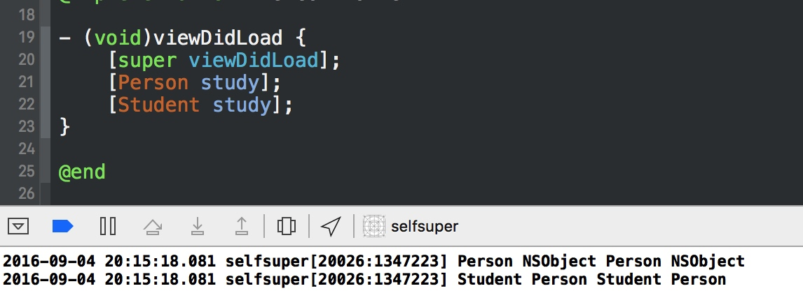
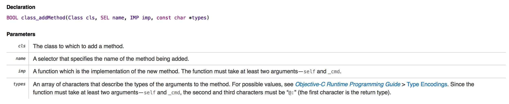
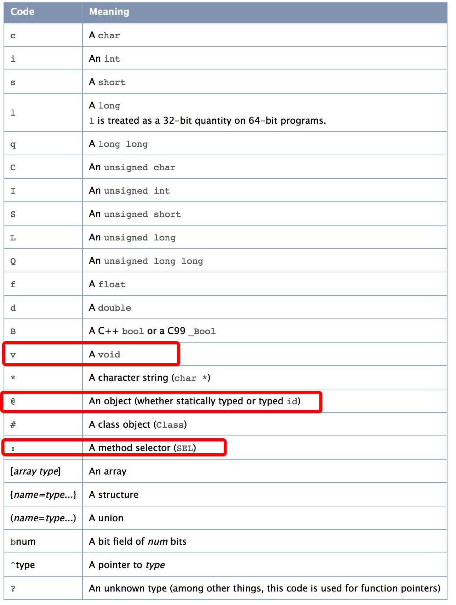

本文涉及到的Demo地址 https://github.com/Mekor/runtimeDemo
理解self,super,class,superclass
创建一个Person里面有一个类方法:
#import "Person.h"
@implementation Person
+(void)study {
NSLog(@"%@ %@ %@ %@",[self class],[self superclass],[super class],[super superclass]);
}
@end
Student继承自Person,重写父类方法
#import "Student.h"
@implementation Student
+(void)study {
NSLog(@"%@ %@ %@ %@",[self class],[self superclass],[super class],[super superclass]);
}
@end
这两个输出的都是什么?

这时,我们在Student中用这样写:
#import "Student.h"
@implementation Student
+(void)study {
// NSLog(@"%@ %@ %@ %@",[self class],[self superclass],[super class],[super superclass]);
[super study];
}
@end
打断点我们可以看到:

可以看出:
super：是编译器指示符，仅仅是一个标志,并不是指针，仅仅是标志的当前对象去调用父类的方法，本质还是当前对象调用
super:并不是让父类对象调用方法，调用者还是本身
class：获取方法调用者的类
superclass:获取方法调用者的父类
消息机制:(来自:官方文档)

当对象收到消息时,消息函数首先根据该对象的 isa 指针找到该对象所对应的类的方法表,并从表中寻找 该消息对应的方法选标。如果找不到,objc_msgSend 将继续从父类中寻找,直到 NSObject 类。一旦找到了方法选标, objc_msgSend 则以消息接收者对象为参数调用,调用该选标对应的方法实现。
self是从哪里来的?
简单说每个方法都存在并且隐藏的两个参数(self,_cmd),随便写个方法看下:
Student中写个text方法,然后打印下这两个隐藏参数.


动态添加方法
上面说了一些貌似和runtime没有什么关系,runtime基础知识类似类的构成,对象的构成这里不再介绍,可以自己去看定义.当然也可以去苹果的开源网站查看,如果网站不方便可以去苹果的github下载开源代码研究... ...继续...那么根据上面所说的方法说下动态添加方法.
思考一下,咱们new项目中将采用路由模式进行页面跳转,从网页跳转进入app调用一个方法,一般情况下都是移动端和后台协议好的内容,这样跳转不会出现问题.但是如果后台写错了或者传输中出现问题导致url中包含的方法名不是规定的方法名.这时怎么办?
Student *s = [Student new];
// 1. 比如我们要调用 Student中的eat方法, 默认这样写[s eat]; 但是不行,因为我们没有定义.
// [s eat];
// 2. 也可以这样调用[s performSelector:@selector(eat)];这样没有问题,@selector中参数是字符串,这个参考swift
// [s performSelector:@selector(eat)];
// 3. 使用string创建SEL
#pragma clang diagnostic push
#pragma clang diagnostic ignored"-Warc-performSelector-leaks"
[s performSelector:NSSelectorFromString(@"eat")];
#pragma clang diagnostic pop
// 上面这样调用会报错,我们在对象调用未实现方法的时候动态的创建一个方法,避免抛出异常.
怎么忽略编译器警告已经分享过,可以参考:http://www.citynight.cn/Blog/14676105703423.html
怎么动态添加方法呢?

上面是动态添加对象方法的例子,动态添加类方法也是一样的+(BOOL)resolveClassMethod:(SEL)sel
注意:上面函数类型,有人可能好奇这块为什么写成"v@:" ?参见:函数类型, 更多关于转发机制参见:转发机制
关于函数类型
先看文档:

查看Objective-C type encodings 
所以上面void eat(...)应该表述成 "v@:"
补充: 动态调用方法系统默认提供一到两个参数的方法调用, 这里封装了一个无限参数的方法调用.NSObject-SEL**** 我把一些扩展进行了总结,还不完善,地址MKExtension
关于IMP(函数指针)
/// A pointer to the function of a method implementation.
#if !OBJC_OLD_DISPATCH_PROTOTYPES
typedef void (*IMP)(void /* id, SEL, ... */ );
#else
typedef id (*IMP)(id, SEL, ...);
#endif
当前版本Xcode如果使用IMP的话,默认是选择第一个也就是无参无返回值.如果需要参数有返回值的话,需要修改配置文件.如下:
方法交换(Method Swizzling:传说中的黑魔法)
一般使用方法交换都是想给系统提供的方法添加一些其他的功能的时候使用.new中使用方法交换的例子:
#import "UIActionSheet+Front.h"
#import <objc/runtime.h>
@implementation UIActionSheet (Front)
- (void)customShowInView:(UIView *)view{
for(UIWindow * tmpWin in [[UIApplication sharedApplication] windows]){
[tmpWin endEditing:NO];
}
[self customShowInView:view];
}
+ (void)load{
swizzleAllActionSheet();
}
@end
void swizzleAllActionSheet(){
Class c = [UIActionSheet class];
SEL origSEL = @selector(showInView:);
SEL newSEL = @selector(customShowInView:);
Method origMethod = class_getInstanceMethod(c, origSEL);
Method newMethod = class_getInstanceMethod(c, newSEL);
method_exchangeImplementations(origMethod, newMethod);
}
关于方法交换,在new项目中已经封装好了,代码如下:
// ObjcRuntime.h文件
void Swizzle(Class c, SEL origSEL, SEL newSEL);
//ObjcRuntime.m文件
//静态就交换静态，实例方法就交换实例方法
void Swizzle(Class c, SEL origSEL, SEL newSEL)
{
Method origMethod = class_getInstanceMethod(c, origSEL);
Method newMethod = nil;
if (!origMethod) {
origMethod = class_getClassMethod(c, origSEL);
if (!origMethod) {
return;
}
newMethod = class_getClassMethod(c, newSEL);
if (!newMethod) {
return;
}
}else{
newMethod = class_getInstanceMethod(c, newSEL);
if (!newMethod) {
return;
}
}
//自身已经有了就添加不成功，直接交换即可
if(class_addMethod(c, origSEL, method_getImplementation(newMethod), method_getTypeEncoding(newMethod))){
class_replaceMethod(c, newSEL, method_getImplementation(origMethod), method_getTypeEncoding(origMethod));
}else{
method_exchangeImplementations(origMethod, newMethod);
}
}
用法(还是以Student为例):
Student中添加两个对象方法,一个run,一个sleep.我们的目的是交换两个方法的实现
-(void)run {
NSLog(@"跑🏃");
}
-(void)sleep {
NSLog(@"睡觉😴");
}
+(void)load {
Swizzle(self, @selector(run), @selector(sleep));
}
控制器调用的结果:

添加属性
动态添加属性用的最多的地方应该是给分类添加属性. 我在项目中添加过一个分类 我把一些扩展进行了总结,还不完善,地址MKExtensionUIView+Tap这个也可以在这里查看UIView-Tap
#import "UIView+Tap.h"
#import <objc/runtime.h>
static const void* tagValue = &tagValue;
@interface UIView ()
@property (nonatomic, copy) void(^tapAction)(id);
@end
@implementation UIView (Tap)
- (void)tap{
if (self.tapAction) {
self.tapAction(self);
}
}
- (void)addTapBlock:(void(^)(id obj))tapAction{
self.tapAction = tapAction;
if (![self gestureRecognizers]) {
self.userInteractionEnabled = YES;
UITapGestureRecognizer *tap = [[UITapGestureRecognizer alloc] initWithTarget:self action:@selector(tap)];
[self addGestureRecognizer:tap];
}
}
-(void)setTapAction:(void (^)(id))tapAction {
objc_setAssociatedObject(self, tagValue, tapAction, OBJC_ASSOCIATION_COPY_NONATOMIC);
}
-(void (^)(id))tapAction {
return objc_getAssociatedObject(self, tagValue);
}
@end
主要是set&get方法,这点注意了也就没啥了..
其他
- 系统中常见的使用到runtime的地方: KVO内部实现原理
- 日常开发中使用到runtime的地方:
- 字典转模型: 可以参看
MJExtension它的核心代码在:NSObject+MJProperty.m第150行开始
#pragma mark - 公共方法
+ (NSMutableArray *)properties
{
NSMutableArray *cachedProperties = [self dictForKey:&MJCachedPropertiesKey][NSStringFromClass(self)];
if (cachedProperties == nil) {
cachedProperties = [NSMutableArray array];
[self mj_enumerateClasses:^(__unsafe_unretained Class c, BOOL *stop) {
// 1.获得所有的成员变量
unsigned int outCount = 0;
objc_property_t *properties = class_copyPropertyList(c, &outCount);
// 2.遍历每一个成员变量
for (unsigned int i = 0; i<outCount; i++) {
MJProperty *property = [MJProperty cachedPropertyWithProperty:properties[i]];
// 过滤掉Foundation框架类里面的属性
if ([MJFoundation isClassFromFoundation:property.srcClass]) continue;
property.srcClass = c;
[property setOriginKey:[self propertyKey:property.name] forClass:self];
[property setObjectClassInArray:[self propertyObjectClassInArray:property.name] forClass:self];
[cachedProperties addObject:property];
}
// 3.释放内存
free(properties);
}];
[self dictForKey:&MJCachedPropertiesKey][NSStringFromClass(self)] = cachedProperties;
}
return cachedProperties;
}
自定义字典转模型中log的输出可以参见Xcode插件ESJsonFormat中ESJsonFormatManager.m第47行:
/**
* 格式化OC属性字符串
*
* @param key JSON里面key字段
* @param value JSON里面key对应的NSDiction或者NSArray
* @param classInfo 类信息
*
* @return
*/
+ (NSString *)formatObjcWithKey:(NSString *)key value:(NSObject *)value classInfo:(ESClassInfo *)classInfo{
NSString *qualifierStr = @"copy";
NSString *typeStr = @"NSString";
//判断大小写
if ([ESUppercaseKeyWords containsObject:key] && [ESJsonFormatSetting defaultSetting].uppercaseKeyWordForId) {
key = [key uppercaseString];
}
if ([value isKindOfClass:[NSString class]]) {
return [NSString stringWithFormat:@"@property (nonatomic, %@) %@ *%@;",qualifierStr,typeStr,key];
}else if([value isKindOfClass:[@(YES) class]]){
//the 'NSCFBoolean' is private subclass of 'NSNumber'
qualifierStr = @"assign";
typeStr = @"BOOL";
return [NSString stringWithFormat:@"@property (nonatomic, %@) %@ %@;",qualifierStr,typeStr,key];
}else if([value isKindOfClass:[NSNumber class]]){
qualifierStr = @"assign";
NSString *valueStr = [NSString stringWithFormat:@"%@",value];
if ([valueStr rangeOfString:@"."].location!=NSNotFound){
typeStr = @"CGFloat";
}else{
NSNumber *valueNumber = (NSNumber *)value;
if ([valueNumber longValue]<2147483648) {
typeStr = @"NSInteger";
}else{
typeStr = @"long long";
}
}
return [NSString stringWithFormat:@"@property (nonatomic, %@) %@ %@;",qualifierStr,typeStr,key];
}else if([value isKindOfClass:[NSArray class]]){
NSArray *array = (NSArray *)value;
//May be 'NSString'，will crash
NSString *genericTypeStr = @"";
NSObject *firstObj = [array firstObject];
if ([firstObj isKindOfClass:[NSDictionary class]]) {
ESClassInfo *childInfo = classInfo.propertyArrayDic[key];
genericTypeStr = [NSString stringWithFormat:@"<%@ *>",childInfo.className];
}else if ([firstObj isKindOfClass:[NSString class]]){
genericTypeStr = @"<NSString *>";
}else if ([firstObj isKindOfClass:[NSNumber class]]){
genericTypeStr = @"<NSNumber *>";
}
qualifierStr = @"strong";
typeStr = @"NSArray";
if ([ESJsonFormatSetting defaultSetting].useGeneric && [ESUtils isXcode7AndLater]) {
return [NSString stringWithFormat:@"@property (nonatomic, %@) %@%@ *%@;",qualifierStr,typeStr,genericTypeStr,key];
}
return [NSString stringWithFormat:@"@property (nonatomic, %@) %@ *%@;",qualifierStr,typeStr,key];
}else if ([value isKindOfClass:[NSDictionary class]]){
qualifierStr = @"strong";
ESClassInfo *childInfo = classInfo.propertyClassDic[key];
typeStr = childInfo.className;
if (!typeStr) {
typeStr = [key capitalizedString];
}
return [NSString stringWithFormat:@"@property (nonatomic, %@) %@ *%@;",qualifierStr,typeStr,key];
}
return [NSString stringWithFormat:@"@property (nonatomic, %@) %@ *%@;",qualifierStr,typeStr,key];
}